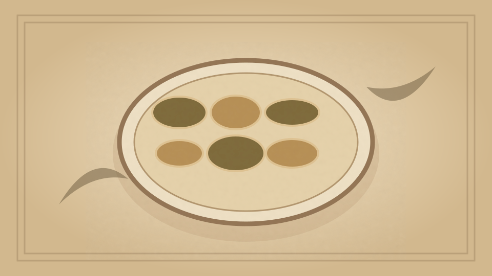

1910 · Fannie Merritt Farmer · FISH
Washington Terrapin
The Boston Cooking-School Cook Book

Historical Recipe
The following text is extracted from the 1910 edition, retaining historical terminology and quantities.
Original Ingredients & Directions
1 terrapin
1½ tablespoons butter
1½ tablespoons flour
1 cup cream
½ cup chopped mushrooms
Salt
Few grains cayenne
2 eggs
2 tablespoons Sherry wine
Melt the butter, add flour, and pour on slowly the cream. Add terrapin meat with bones cut in pieces, entrails cut smaller, liver separated in pieces, eggs of terrapin, and mushrooms. Season with salt and cayenne. Just before serving, add eggs slightly beaten and two tablespoons Sherry wine.
Automatically extracted transcription; editorial verification pending. Historical instructions may not meet modern food-safety standards.